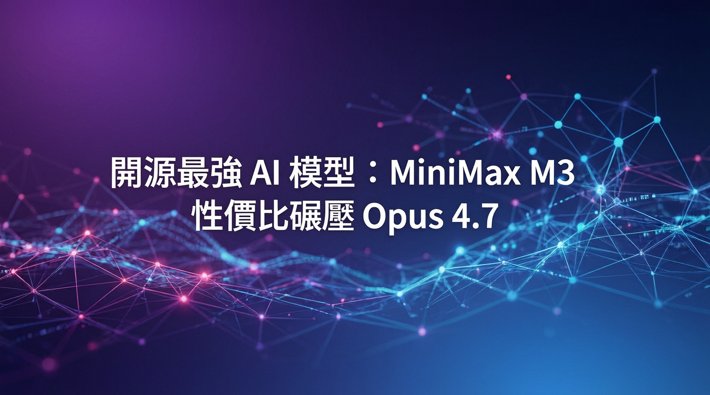

100萬上下文窗口、碾壓Opus 4.7、性價比50倍

MiniMax 再次推出令人震驚的 AI 版本——MiniMax M3，一款開源前沿模型，將編碼、代理推理、多模態理解和長上下文能力整合於一身。M3 支援高達 100 萬 token 的上下文窗口，從第一天起就原生多模態，在 SWE-Bench Pro、BrowseComp、SVG-Bench、KernelBench Hard、OSWorld Verified 等多項基準測試中展現出色成果。
「MiniMax M3 可能是迄今為止最瘋狂的開源 AI 模型發布之一。在多項基準測試中，它實際上超越了 Opus 4.7 和 GPT-5.5，同時價格卻便宜 50 倍。」
— World of AI 頻道採用 Multi-head Sparse Attention 架構，專為編碼和 AI 代理任務優化，大幅提升長上下文處理效率。
從第一天起就支援多模態輸入，無需額外微調即可處理文本、圖像、程式碼等多種數據類型。
支援高達 100 萬 token 的上下文窗口，適合長程推理、程式碼庫理解和複雜代理任務。
在 SWE-Bench Pro、BrowseComp、SVG-Bench、KernelBench Hard、OSWorld Verified 等測試中領先同類模型。
MiniMax M3 不僅在多項基準測試中超越 Opus 4.7 和 GPT-5.5，其 API 價格更是大幅低於競爭對手——約為 Opus 4.7 的 1/50，讓前沿 AI 模型的使用成本大幅降低。
MiniMax 同時提供巨額 Token 方案、激進的 API 定價和開源權重訪問，成為目前性價比最高的前沿級模型之一。
除了基準測試，MiniMax M3 還在多個實際任務中展現出色表現：
| 模型 | SWE-Bench Pro | 上下文窗口 | 價格（每百萬 token） | 多模態 |
|---|---|---|---|---|
| MiniMax M3 | 領先 | 100 萬 token | 極低（50x cheaper） | 原生支援 |
| Claude Opus 4.7 | 高 | 20 萬 token | 標準定價 | 需要微調 |
| GPT-5.5 | 高 | 100 萬 token | 較高 | 原生支援 |
| DeepSeek V3.2 | 中上 | 128K token | 中等 | 部分支援 |
有多種方式可以訪問 MiniMax M3：
• 基準測試結果基於特定測試環境，可能不代表所有使用場景
• 價格可能隨市場變化而調整，建議查閱官方最新定價
• 使用前請自行研究，選擇最適合您需求的模型
MiniMax M3 的發布標誌著開源 AI 模型邁入新階段。100 萬 token 上下文、原生多模態、頂尖基準測試表現，加上僅為競爭對手 1/50 的價格，使其成為 2026 年最具競爭力的 AI 模型之一。如果 MiniMax 持續如此發展，有望成為開源 AI 領域的最大玩家。